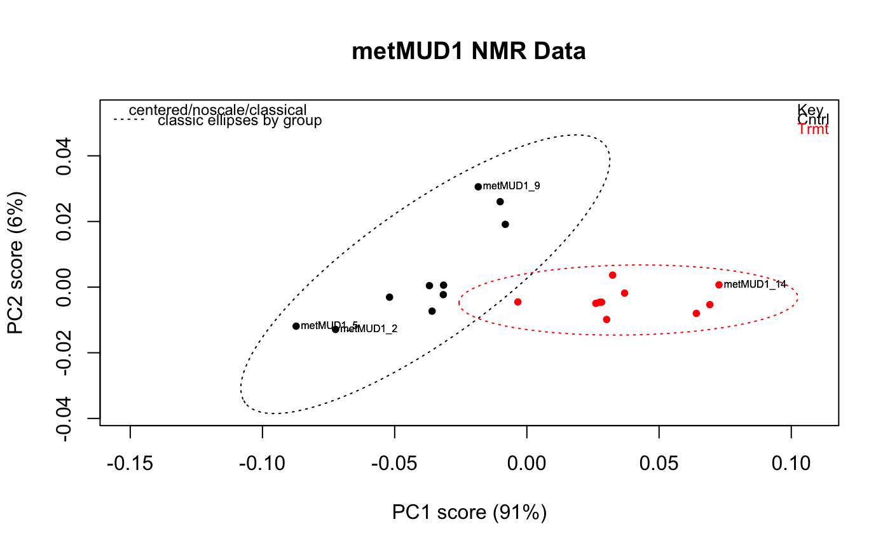

Plots the requested PCA scores using the color scheme derived from a
Spectra object. Options are provided to add confidence
ellipses for each group in the object. The ellipses may be robust or
classical. Option to label the extreme points provided.
plotScores(spectra, pca, pcs = c(1, 2), ellipse = "none", tol = "none", use.sym = FALSE, leg.loc = "topright", ...)
| spectra | An object of S3 class |
|---|---|
| pca | An object of class |
| pcs | A vector of two integers specifying the PCA scores to plot. |
| ellipse | A character vector specifying the type of ellipses to be
plotted. One of |
| tol | A number describing the fraction of points to be labeled.
|
| use.sym | A logical; if true, the color scheme is set to black and the points plotted with symbols. |
| leg.loc | Character; if |
| … | Additional parameters to be passed to the plotting functions. |
None. Side effect is a plot.
https://github.com/bryanhanson/ChemoSpec
For other ways of displaying the results, plotScree,
plotLoadings, plot2Loadings. For a 3D plot of
the scores, see plotScores3D, or plotScoresRGL
for an interactive version.
data(metMUD1) pca <- c_pcaSpectra(metMUD1) plotScores(metMUD1, pca, main = "metMUD1 NMR Data", pcs = c(1,2), ellipse = "cls", tol = 0.05)